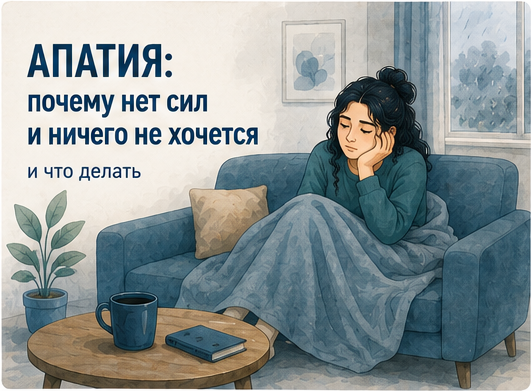
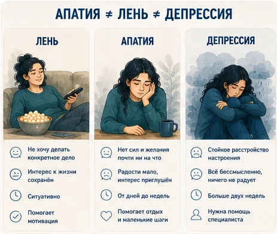
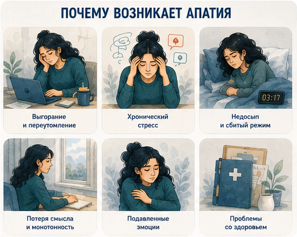
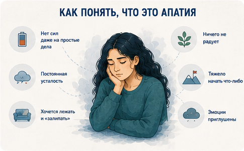
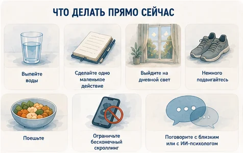
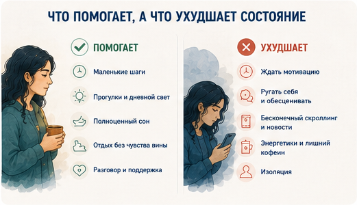
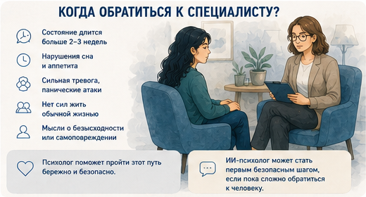
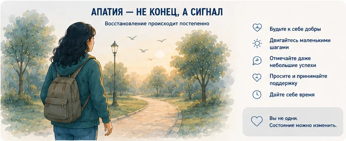

Апатия: почему нет сил и ничего не хочется — и что делать
Обновлено: 02.08.2026 · 10 минут чтения

Апатия — это состояние, когда пропадают силы, интерес и желание что-либо делать, даже то, что раньше радовало. Чаще всего это не лень и не «распущенность», а сигнал, что психика и тело перегружены и просят паузы. Хорошая новость: в большинстве случаев энергию и вкус к жизни можно вернуть — начиная с очень маленьких шагов и базового ухода за собой.
- Что такое апатия и чем она отличается от лени и депрессии
- Почему нет сил и ничего не хочется
- Что происходит в мозге при апатии
- Как понять, что это апатия
- Экспресс-проверка: есть ли у вас апатия
- Апатия в разных ситуациях (утро, после болезни, у подростков)
- Что делать прямо сейчас: 7 шагов
- Как вернуть силы в долгую
- Мифы об апатии
- Что не помогает и какие ошибки затягивают апатию
- Когда обратиться к специалисту
- Частые вопросы
Что такое апатия и чем она отличается от лени и депрессии
Апатия — это снижение мотивации, интереса и эмоционального отклика. Мир как будто теряет краски: дела, которые раньше увлекали, кажутся пустыми, а на любое действие «нет сил». Само по себе это не болезнь, а состояние — реакция психики на перегрузку, стресс, усталость или потерю смысла.
Важно не путать апатию с двумя похожими вещами — ленью и депрессией. Это разные явления, и относиться к ним нужно по-разному.

Проще говоря: лень избирательна, апатия тотальна, а депрессия — это уже медицинское состояние, где апатия может быть одним из симптомов. Если сомневаетесь, к чему ближе ваше состояние, — об этом раздел «Когда обратиться к специалисту» в конце.
Почему нет сил и ничего не хочется
Апатия почти никогда не берётся «на пустом месте». Обычно за ней стоит одна или несколько вполне понятных причин:
- Переутомление и выгорание. Долгая работа на пределе без отдыха истощает — организм «выключает» мотивацию, чтобы вы наконец остановились. Подробно об этом — в статье про эмоциональное выгорание.
- Хронический стресс. Когда нервная система месяцами в напряжении, ресурсы заканчиваются, и наступает откат в безразличие. Что с этим делать — в материале про стресс на работе.
- Недосып и сбитый режим. Без сна мозг физически не восстанавливается, и первым страдает именно мотивация.
- Потеря смысла и монотонность. Когда дни похожи один на другой и непонятно, ради чего всё это, психика теряет «топливо».
- Подавленные эмоции. Долго сдерживаемые тревога, злость или горе после утраты тоже могут «схлопнуться» в апатию — на переживание чувств просто не осталось сил.
- Телесные причины. Апатию дают дефицит железа, витамина D, проблемы со щитовидной железой, инфекции и восстановление после болезни. Это стоит исключить с врачом.

Понять свою причину важно: от «просто устал» помогает отдых, а от «потерял смысл» — маленькие действия и новые опоры. Но начинать восстановление можно, даже пока причина не до конца ясна.
Что происходит в мозге при апатии
Апатия — это не «слабость характера», а во многом биология. За желание действовать отвечает нейромедиатор дофамин: он создаёт предвкушение награды и мотивацию начать. Когда дофаминовая система истощена — из-за хронического стресса, недосыпа или выгорания, — мозг перестаёт «выдавать» стимул, и любое дело ощущается бессмысленным и неподъёмным. Это не лень: топлива для старта действительно не хватает.
Второй участник — гормон стресса кортизол. В короткой дозе он помогает мобилизоваться, но при длительном стрессе его хронически высокий уровень истощает ресурсы, ухудшает сон и притупляет эмоции. Организм переходит в режим «энергосбережения» — и субъективно это ощущается как апатия и безразличие.
Поэтому апатия так часто идёт рука об руку с тревогой (иногда вплоть до панических атак), выгоранием и сниженным настроением: у них общая почва — перегруженная стрессом нервная система. По данным Всемирной организации здравоохранения, только депрессией в мире страдают около 332 млн человек, а потеря интереса и сил — один из её ключевых признаков. Всё это говорит об одном: упадок сил — очень распространённое и объяснимое состояние, а не повод винить себя.
Как понять, что это апатия
Апатия проявляется не только в «ничего не хочу» — она затрагивает тело, эмоции и поведение сразу.
В теле это постоянная усталость и тяжесть, которые не проходят даже после сна. В эмоциях — приглушённость: ни радости, ни злости, всё будто за стеклом. В поведении — любое дело требует огромного усилия, даже привычное и простое, а то, что раньше приносило радость, оставляет равнодушным. Важное отличие от прокрастинации: дела откладываются не из-за страха или перфекционизма, а потому что на них буквально нет сил.

Если это про вас и длится недолго — шаги ниже помогут мягко вернуться в тонус. А чтобы прикинуть, насколько всё серьёзно, пройдите короткую проверку.
Экспресс-проверка: есть ли у вас апатия
Отметьте, сколько утверждений описывают вас прямо сейчас:
- мне трудно заставить себя делать даже простые дела;
- то, что раньше радовало, стало безразличным;
- я чувствую постоянную усталость, даже после сна;
- эмоции будто приглушены — ни радости, ни злости;
- я откладываю дела не из страха, а из-за нехватки сил;
- всё чаще хочется просто лежать и ни с кем не общаться.
Три и больше совпадений — скорее всего, вы в апатии, и шаги из этой статьи вам помогут. Если состояние держится дольше двух недель и мешает жить, стоит показаться специалисту. Это не диагноз, а повод отнестись к себе внимательнее.
Апатия в разных ситуациях
Упадок сил выглядит по-разному в зависимости от того, когда и у кого он возникает. Вот самые частые варианты — и что за ними обычно стоит.
Апатия по утрам
Если тяжелее всего именно утром, а к вечеру немного отпускает, дело чаще всего в качестве сна и суточных ритмах. Разорванный или недостаточный сон не даёт мозгу восстановиться, и первым «не включается» именно мотивация. Помогают стабильное время подъёма, утренний свет и лёгкая разминка сразу после пробуждения.
Апатия осенью
Если силы пропадают каждый год с сокращением светового дня, а весной возвращаются, речь может идти о сезонном снижении настроения. На коротком дне меняется выработка мелатонина и серотонина, поэтому появляются сонливость, тяга к сладкому и безразличие — и это не лень. Что с этим делать по шагам, разобрано в статье про осеннюю депрессию.
Апатия после болезни
Упадок сил, сонливость и безразличие после простуды, гриппа или коронавируса — нормальная часть восстановления: организм направляет ресурсы на выздоровление. Обычно это проходит за одну–три недели по мере возвращения сил. Не форсируйте — возвращайте активность постепенно.
Апатия после отпуска
Знакомое «не хочу на работу» после отдыха — это откат после спада напряжения и резкой смены ритма. Мозгу нужно несколько дней, чтобы перестроиться. Мягкий вход в работу, реалистичные планы на первую неделю и маленькие приятные дела помогают быстрее вернуться в колею.
Апатия у подростков
У подростков апатия часто связана с учебной перегрузкой, недосыпом, гормональной перестройкой и давлением ожиданий. Здесь особенно важно не давить «соберись», а снизить требования, наладить сон и поговорить по-человечески. Если апатия у подростка сопровождается замкнутостью, падением успеваемости и подавленностью дольше двух недель — нужна помощь специалиста.
Что делать прямо сейчас: 7 шагов
Главный принцип работы с апатией парадоксален: сначала действие — потом желание. В апатии бесполезно ждать, пока «появится настрой»: он приходит уже в процессе. Этот подход называется поведенческой активацией и хорошо помогает при упадке сил.
- Снизьте планку до смешного. Не «убраться в квартире», а протереть один стол. Не «пойти на тренировку», а надеть кроссовки и выйти во двор. Цель — сдвинуться с места, а не сделать много.
- Правило пяти минут. Договоритесь с собой делать дело всего 5 минут и разрешите себе остановиться. Чаще всего самое трудное — начать, а дальше становится легче.
- Закройте базу тела. Стакан воды, нормальная еда, сон, немного дневного света и короткая прогулка. Апатия часто держится на банальном истощении, и без этого фундамента остальное не сработает.
- Двигайтесь, даже чуть-чуть. Лёгкая физическая активность — самый быстрый способ поднять энергию. Достаточно 10–15 минут ходьбы, чтобы тело «завелось».
- Уберите лишние стимулы. Бесконечная лента и десятки вкладок перегружают и без того истощённый мозг. На время сократите информационный шум — это освобождает ресурс.
- Вернитесь к тому, что раньше радовало. Не ждите желания — сделайте это «через не хочу», в мини-формате: одна страница книги, одна песня, короткий созвон с близким.
- Проговорите своё состояние. Апатию усиливает изоляция. Поделитесь с тем, кому доверяете, или проговорите это с ИИ-психологом — анонимно и в любое время, когда рядом никого нет.

Если сложно сделать даже первый шаг — обсудите это с ИИ-психологом. Он поможет разобраться в возможных причинах апатии, задаст уточняющие вопросы и вместе с вами составит небольшой план восстановления. Анонимно, без осуждения и записи.
Как вернуть силы в долгую
Быстрые шаги помогают сдвинуться, но чтобы апатия не возвращалась, важно восстановить ресурс на дистанции:
- Наладьте режим сна. Стабильное время отхода ко сну и подъёма — базовая опора энергии. Если заснуть мешает тревога, помогут приёмы из статьи про бессонницу.
- Дайте себе честный отдых. Не «продуктивный», а настоящий: без чувства вины, без задач на фоне. Психике нужны пустые, ненагруженные часы.
- Верните смысл маленькими опорами. Не обязательно искать «дело всей жизни» — достаточно небольших регулярных занятий, которые дают отклик: хобби, забота о ком-то, движение к маленькой цели.
- Снизьте требования к себе. Апатия часто растёт из хронической гонки и завышенной планки. Мягкое отношение к себе восстанавливает быстрее, чем самокритика — об этом статья про самооценку.
- Структурируйте день. Простой распорядок с чередованием дел и отдыха снимает с уставшего мозга нагрузку по принятию решений.
Мифы об апатии
Вокруг апатии много вредных установок, которые мешают из неё выйти. Разберём главные:
- «Апатия — это просто лень». Нет. При лени интерес к жизни сохраняется и другое дело увлекает, а при апатии сил нет ни на что. За апатией стоит реальное истощение нервной системы, а не распущенность.
- «Надо взять себя в руки». Волевой рывок на пустых батареях лишь усиливает вину и откат. Работает не давление, а маленькие шаги и восстановление ресурса.
- «Само пройдёт, если перетерпеть». Короткая апатия действительно проходит с отдыхом. Но если её причина — хронический стресс или депрессия, «терпеть» можно месяцами, и без действий или помощи легче не станет.
- «Апатия = депрессия». Не всегда: апатия — это симптом, а не диагноз. Она бывает от усталости и стресса, но может быть и частью депрессии. Отличить помогает специалист.
Что не помогает и какие ошибки затягивают апатию
Иногда мы, сами того не желая, только усиливаем упадок сил. Вот что при апатии не работает и каких ловушек стоит избегать:

- Ругать себя за лень. Самокритика при апатии не мотивирует, а отнимает последние силы и добавляет вины.
- Ждать «настроения». В апатии оно само не появится — ждать бесполезно, работает только маленькое действие.
- Пытаться сделать всё разом. Резкий рывок «с понедельника новая жизнь» на истощении быстро приводит к откату.
- Глушить состояние стимуляторами. Литры кофе, энергетики и «залипание» в телефон дают краткий эффект, но затем ещё сильнее опустошают.
- Полная изоляция. Уход в себя кажется отдыхом, но чаще углубляет безразличие и переходит в одиночество. Даже минимальный контакт с людьми помогает.
Когда обратиться к специалисту
Короткая апатия после нагрузки — нормальная реакция, которая проходит с отдыхом. Но есть сигналы, при которых важна помощь врача или психотерапевта:

- апатия держится больше двух недель и не связана с очевидной причиной;
- добавляются подавленное настроение, чувство бессмысленности, нарушения сна и аппетита;
- состояние мешает работать, учиться, общаться и заботиться о себе;
- ничего не помогает, а становится только тяжелее;
- появляются мысли о том, что не хочется жить.
Апатия и стоящие за ней состояния — включая депрессию — хорошо поддаются терапии. Обратиться за помощью — не слабость, а разумный шаг, который экономит силы и время.

Частые вопросы
Чем апатия отличается от лени?
Лень — это выбор: человек может действовать, но предпочитает не делать что-то конкретное, а другое дело его увлекает. Апатия — это состояние, когда сил и желания нет ни на что, включая то, что раньше радовало. При лени интерес к жизни сохраняется, при апатии он приглушён. Поэтому упрекать себя в лени при апатии бесполезно и вредно.
Сколько длится апатия?
Короткая апатия после сильной нагрузки, стресса или болезни — это нормальная реакция, она обычно проходит за несколько дней или пару недель, когда вы отдыхаете и восстанавливаетесь. Если состояние держится больше двух недель, не связано с очевидной причиной и мешает жить, это повод обратиться к врачу или психотерапевту.
Что делать, если нет сил вообще ничего делать?
Начните с самого маленького действия и снизьте планку до предела: не «убраться», а протереть один стол, не «на пробежку», а выйти на пять минут на улицу. Действие в апатии идёт первым, а желание и энергия приходят уже в процессе — это принцип поведенческой активации. Добавьте базовый уход за собой: сон, вода, еда, немного дневного света.
Апатия — это депрессия?
Не всегда. Апатия — это отдельный симптом, снижение интереса и мотивации, и она бывает от усталости, стресса или выгорания. Но апатия также может быть одним из признаков депрессии, особенно если к ней добавляются подавленное настроение, чувство бессмысленности, нарушения сна и аппетита дольше двух недель. Отличить одно от другого поможет специалист.
Почему апатия усиливается по утрам?
По утрам на состояние сильнее всего влияют качество сна и суточные ритмы: если сон разорванный или недостаточный, мозг не успевает восстановиться, и первой «не включается» мотивация. Обычно к середине дня становится легче. Помогают стабильное время подъёма, утренний свет и лёгкая разминка. Если тяжесть по утрам держится неделями, стоит проверить сон и обратиться к врачу.
Нормально ли чувствовать апатию после болезни?
Да. Упадок сил, сонливость и безразличие после простуды, гриппа или коронавируса — обычная часть восстановления: организм тратит ресурсы на выздоровление. Как правило, это проходит за одну–три недели по мере возвращения сил. Если апатия после болезни затягивается или усиливается, это повод показаться врачу.
Материал подготовлен командой AI Therapist и основан на доказательных подходах к работе с упадком сил и сниженным настроением — поведенческой активации, когнитивно-поведенческой терапии (КПТ) и практиках осознанности (Mindfulness). Статья носит просветительский характер и не заменяет консультацию специалиста.
Источник: NHS — Get help with low mood, sadness or depression.
Кто отвечает за содержание сайта и по каким правилам мы готовим материалы — на странице о проекте.